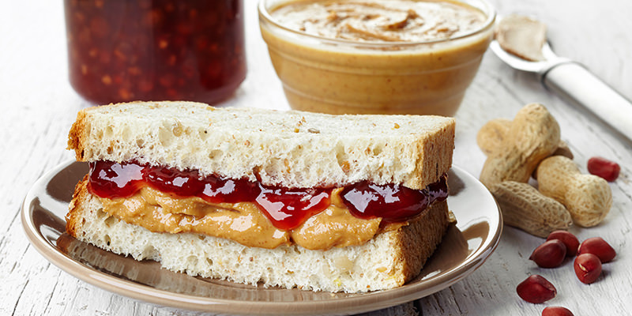

The Perfect PB & J

Description
This peanut butter and jelly sandwich is my favorite sandwich. It has the perfect
balance of ingredients and looks great when made right.
Any peanut butter and jam will work but my recommendation is to use grape
jelly and all natural peanut butter
Ingredients
Directions
- Lay both slices of bread next to each other on a cutting board.
- With the butter knife, spread a 1/8 inch layer of peanut butter on the left
side.
- On the right side, spread a 1/8 inch layer of jelly.
- Carefully place the two halves together so that the jelly is on top.
Thanks to
Google Creative Lab - Coder Projects for content & inspiration.